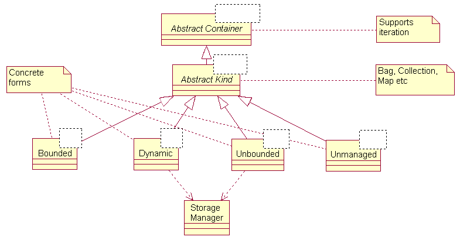

|
Documentation

Key Abstractions
The Patterns of the BCs
Tactical Issues
Macro Organization
Class Families
Micro Organization
Time and Space Semantics
Storage Management
Exceptions
Iteration
Support
The Containers

The Ada 95 version of the components contains the same key abstractions as the C++ form (Structs, Tools and Support). However, the organization is slightly different, particularly in the Support domain. This is because Ada 95 provides several special forms of memory management that are quite different from C++.
The Structs category provides an array of structural abstractions (Bags, Collections, Deques, Graphs, Lists, Maps, Queues, Rings, Sets, Stacks, and Trees). The Tools category provides algorithmic abstractions (Searching, Sorting, etc.). The Support category contains all the "concrete" forms, plus structures to create the components.
Some of the structures permit structural sharing (graphs, lists, and trees). Some structures may also be ordered (collections and queues). There are also multiple forms for some structures: single and double linked lists, directed and undirected graphs, and binary, multiway, and AVL trees.
The structures originally supported only definite items. Work by Martin Krischik introduced support for indefinite items (for example, String).
The BCs cover several issues:
These patterns have evolved in a way that each language feature is used in an efficient and appropriate manner, with the overall goal of balancing usability and extensibility.
The particular semantics of a given programming language influence our architectural decisions. To ignore these influences leaves us with abstractions that do not take advantage of the language's unique features, or with mechanisms that cannot be efficiently implemented. -- G. Booch
Ada 95 inherently provides several features not present in C++: safe generics, safe object-oriented programming (no silent "object slicing"), general access types and access discriminants, and concurrency support. All this as well as user-definable storage management, automatic reclamation of resources (garbage collection "lite"), aggregation, inheritance, and parameterization available in C++ and other languages.
The BCs take advantage of several critical forms of structuring: inheritance, parameterization, modularity, and aggregation. Of these forms, parameterization is the form most often used.
The BCs emphasize separation of policy from implementation. For this reason, abstract classes are declared for every major component type. Also, the Support category provides the common low-level features used in constructing the different components, in order to help the "power user" create new components or extend existing ones.
An example:
A Mail_Queue is an instance of an Ordered_Queue, which itself
is a generic instantiated with Network_Event as the item it
contains. The Ordered_Queue is derived from Queue.
Each abstract base class has several derived concrete forms, each designed to support specific needs for time and space semantics. The user selects the concrete form most appropriate to their needs. The net result is that copy, assignment, and equality operations work between each different form of the components.
There are two very common variations of structure management: bounded and unbounded.
A third form, dynamic, represents a heap structure which behaves (basically) as a dynamic array. Its performance lies between that of a bounded and unbounded structure. The array can grow or shrink in multiples of a chunk_size. [Note, this C++-originated feature becomes less valuable given Ada's support for user-defined storage pools.]
A fourth, simpler, form, unmanaged, can be used when storage management is not of concern.
The selection syggestions are:
Each Abstract Base Class generally follows the same form of derivation: 
(Each level is a derivation via inheritance. Each class is a generic using Item as the container parameter)
The fundamental difference between the Unbounded and Bounded forms is that the unbounded form is essentially an time efficient linked-list, but is not very space efficient. The bounded form uses a packed array base class, which is space efficient, but can become time inefficient if adding items into the middle of the array.
Storage management on certain architectures can be complex, and so requires that all of our classes use a policy tailored to the platform, rather than using a general one assumed by the library designer to work in all circumstances. By clearly isolating these patterns of storage management, we can provide a robust, adaptable library.
By treating the storage manager as an argument to all the dynamic and unbounded concrete structures, we effectively decouple storage management policy from its implementation, and make it possible for library users to insert their own storage management policy without changing the library. This is a classic example of extensibility through instantiation instead of inheritance.
The only requirement we place upon storage managers is that they provide the same well-defined protocol. This is defined by the standard package Ada.Storage_Pools.
Two predefined managers are available:
Note that the supplied BC.Support.Managed_Storage will not support allocation of items larger than its chunk size.
For those who don't need this level of control, we provide Unmanaged forms.
All exceptions for the BCs are declared in the topmost package, BC. This precludes the user from having to with a separate "Exceptions" package. Exception behaviour of the BCs is standard and portable, unlike other languages.
As well as the exceptions from the C++ Components, an exception Should_Have_Been_Overridden is possible. It will only be raised if the implementor has forgotten to override a private subprogram of an abstract class (such subprograms can't be abstract, see RM95 3.9.3(10)).
Separate types act as agents responsible for iterating across a structure. This was done for two reasons:
There are two forms: active and passive. Active iteration requires the client explicitly advance the iterator. For passive, the client supplies a single procedure Apply to work across the structure.
In both forms, mechanisms are provided (where appropriate) to allow access to the actual contained object rather than just to its value.
There are many different approaches to iteration in Ada 95. The current mechanism was selected for its direct simplicity and efficiency.
The support packages (BC.Support and children) come in two flavours:
The general utilities are:
This is a table of the definite components (children of BC.Containers) and the forms that are supported.
| Component | Unbounded | Bounded | Dynamic | Unmanaged |
|---|---|---|---|---|
| Bags | ✓ | ✓ | ✓ | ✓ |
| Collections | ||||
| plain | ✓ | ✓ | ✓ | ✓ |
| ordered | ✓ | ✓ | ✓ | ✓ |
| Dequeues | ✓ | ✓ | ✓ | ✓ |
| Graphs | ||||
| directed | ✓ | |||
| undirected | ✓ | |||
| Lists | ||||
| single | ✓ | |||
| double | ✓ | |||
| Maps | ✓ | ✓ | ✓ | ✓ |
| Queues | ||||
| plain | ✓ | ✓ | ✓ | ✓ |
| ordered | ✓ | ✓ | ✓ | ✓ |
| Rings | ✓ | ✓ | ✓ | ✓ |
| Sets | ✓ | ✓ | ✓ | ✓ |
| Stacks | ✓ | ✓ | ✓ | ✓ |
| Trees | ||||
| AVL | ✓ | |||
| binary | ✓ | |||
| multiway | ✓ |
This is a table of the indefinite components (children of BC.Indefinite_Containers) and the forms that are supported.
| Component | Unbounded | Bounded |
|---|---|---|
| Bags | ||
| Collections | ||
| plain | ✓ | ✓ |
| ordered | ✓ | ✓ |
| Dequeues | ||
| Graphs | ||
| directed | ||
| undirected | ||
| Lists | ||
| single | ||
| double | ||
| Maps | ✓ | ✓ |
| Queues | ||
| plain | ✓ | ✓ |
| ordered | ✓ | ✓ |
| Rings | ||
| Sets | ||
| Stacks | ||
| Trees | ||
| AVL | ||
| binary | ||
| multiway |
This is a table of the indefinite unmanaged components (children of BC.Indefinite_Unmanaged_Containers).
| Component | Supported |
|---|---|
| Bags | |
| Collections | |
| plain | ✓ |
| ordered | ✓ |
| Dequeues | |
| Graphs | |
| directed | |
| undirected | |
| Lists | |
| single | |
| double | |
| Maps | ✓ |
| Queues | |
| plain | ✓ |
| ordered | ✓ |
| Rings | |
| Sets | |
| Stacks | |
| Trees | |
| AVL | |
| binary | |
| multiway |